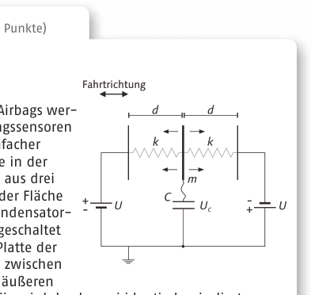
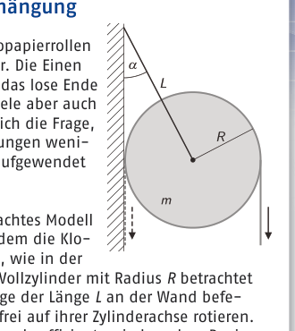

Problem 3 (15 points) A hot hairstyle The American girls Sofia and Grace exchange travel experiences: “On my trip to Paris last month, my hairdryer burned out,” Grace reports. Sofia thinks that this was probably due to the higher European mains voltage of 230 V compared to the voltage of 120 V usual in the USA, and decides to take precautions for her upcoming trip to Europe. She fits a series resistor between the socket and the hairdryer, so that at home the hairdryer takes up only half of its power. No sooner had she arrived in Europe … State how the story with the hairdryer is likely to continue and justify this physically. Junior problem (10 points) Round 1 When? Registration is open from April 2013. Submission deadlines are in the summer and can be found on the IPhO website. Who? Interested students who, in the 2013/2014 school year, attend a general-education German school and were born after 30.06.1994. Where? The problems are solved as homework. You hand in your work to your subject teacher for correction. How? Four problems from all areas of physics are to be solved. The solutions may be written by hand or on a computer and should be comprehensible but not unnecessarily long. Textbooks may be used provided the sources are cited. Formulas that appear in the standard textbooks do not need to be derived. Only individual work is allowed. Anyone who, in the 2013/14 school year, has not yet reached the second-to-last grade level can earn a bonus of points through the additional junior problem. What can you win? Participants receive a certificate of participation or a diploma. Round 2 When? September to October 2013. Who? The problems are published at the end of August on the IPhO website and sent to all prize winners of the first round. Successful candidates from middle-school physics competitions or Jugend Forscht may also take part. Where? You again solve the problems at home and send your work for correction, uncorrected, to your state representative by 30 October 2013. It will later be reviewed once more at the IPN. How? Theoretical and experimental physics problems are to be worked on. These are more demanding than in the first round. Otherwise the same rules apply. What can you win? All participants receive a diploma with an assessment sheet. The roughly 50 best are invited to the third round. The state representatives coordinate the running of the first two rounds in the individual federal states. They are your contact persons up to the third round. Round 3 When? 01 - 07 February 2014. Who? The roughly 50 best of the second round. Where? The third round takes place as a one-week seminar at the DLR_School_ Lab Göttingen. How? The task now is to work on two theoretical and two experimental exams without reference literature. In the afternoons there are seminars and excursions. What can you win? All participants receive, in addition to a book voucher and a subscription, a diploma with an assessment sheet. Young talents are offered the opportunity to take part in the European Science Olympiad (EUSO), a science team competition. Round 4 When? Expected 22-27 April 2014. Who? The 15 best of the third round. Where? For the fourth round the participants are invited for a week to a research centre. How? Here theoretical and experimental exams are again on the programme. To prepare for the IPhO, problem seminars are held that are specifically geared towards typical IPhO questions. What can you win? The five most successful not only make up the Olympiad team, but with this round also go through the selection process for the Studienstiftung des deutschen Volkes. For the others there are, besides a cash prize of 500 Euro, also language trips and internships. In addition, the Deutsche Physikalische Gesellschaft awards its student prize to the team members. Baden-Württemberg OStR Fabian Bühler Schülerforschungszentrum Südwürttemberg Gutenbergstr. 18 88348 Bad Saulgau baden-wuerttemberg@ipho.info Bayern StD Richard Reindl Werdenfels-Gymnasium Wettersteinstraße 30 82467 Garmisch-Partenkirchen bayern@ipho.info Berlin StD Dr. Ingo Wilken Lise-Meitner-Schule Rudower Str. 184 12351 Berlin berlin@ipho.info Brandenburg Reiner Bohn Carl-Friedrich-Gauß-Gymnasium Friedrich-Ebert-Str. 52 15234 Frankfurt(Oder) brandenburg@ipho.info Bremen OStR Peter Weinhold Lloyd Gymnasium Grazer Str. 61 27568 Bremerhaven bremen@ipho.info Hamburg OStR Carsten Reich Gymnasium Heidberg Fritz-Schumacher-Allee 200 22417 Hamburg hamburg@ipho.info Hessen StR Jörg Steiper Albert-Schweitzer-Schule Schülerforschungszentrum Nordhessen Kölnische Str. 89 34119 Kassel hessen@ipho.info Mecklenburg-Vorpommern PD Dr. Heidi Reinholz Universität Rostock Institut für Physik Universitätsplatz 3 18051 Rostock mecklenburg-vorpommern@ipho.info Niedersachsen OStR Dirk Brockmann-Behnsen Krausenstraße 39 30171 Hannover und Prof. Dr. Gunnar Friege IDMP Universität Hannover Welfengarten 1 30167 Hannover niedersachsen@ipho.info NRW Arnsberg LRSD Thomas Daub Bezirksregierung Arnsberg Laurentiusstraße 1 59821 Arnsberg nrw-arnsberg@ipho.info NRW Detmold StD Peter Goldkuhle und StD Stefan Blumenthal Bezirksregierung Detmold Fachberatung Physik Leopoldstraße 13-15 32756 Detmold nrw-detmold@ipho.info NRW Düsseldorf LRSD Norbert Stirba Bezirksregierung Düsseldorf Am Bonneshof 35 40474 Düsseldorf nrw-duesseldorf@ipho.info NRW Köln StD Dieter Stauder Zentrum für schulpraktische Lehrerausbildung Bonn Godesberger Allee 136 53175 Bonn nrw-koeln@ipho.info NRW Münster LRSD Klaus Dingemann und Reinhard Beer Bezirksregierung Münster Albrecht-Thaer-Str. 9 48147 Münster nrw-muenster@ipho.info Rheinland-Pfalz OStR Christoph Holtwiesche Rabanus-Maurus-Gymnasium 117er Ehrenhof 2 55118 Mainz rheinland-pfalz@ipho.info Saarland Dr. Doris Simon Theodor-Heuss-Gymnasium Quierschieder Weg 4 66280 Sulzbach saarland@ipho.info Sachsen Joachim Brucherseifer Wilhelm-Ostwald-Gymnasium Willi-Bredel-Str. 15 04279 Leipzig sachsen@ipho.info Sachsen-Anhalt Lutz Bothendorf Werner-von-Siemens Gymnasium Stendaler Str. 10 39106 Magdeburg sachsen-anhalt@ipho.info Schleswig-Holstein OStR Stefan Burzin Werner-Heisenberg-Gymnasium Rosenstraße 41 25746 Heide schleswig-holstein@ipho.info Thüringen Bernd Schade Carl-Zeiss-Gymnasium Spezialschule mit math.-naturw.-techn. Richtung Erich-Kuithan-Str. 7 07743 Jena thueringen@ipho.info Addresses of the state representatives The front shows a photograph of burning steel wool by Lucas-Raphael Müller, a participant in the selection competition for the IPhO 2013. Clearly visible are the approximately parabolic flight paths of the sparks. Have you taken great photos yourself that have something to do with physics? Then send us your picture with a short explanation to info@ipho.info. For the best pictures there is a prize and the chance that the picture will be printed on one of the next IPhO posters. Information on the four selection rounds for the 45th IPhO 2014

sensore airbag: circuito con condensatore e molle
cilindro appeso a parete con angolo e forzeTopic: Circuits Metodi: Physical Modeling, Kirchhoff’s Laws Competenze: Physical Reasoning, Mathematical Modeling Objects: Resistor Fonte: Testo (PDF) — p.3
Problema 3 (15 punti) Un capelli caldi Le ragazze americane Sofia e Grace scambiano esperienze di viaggio: “Il mese scorso, durante il mio viaggio a Parigi, il mio asciugatore di capelli si è bruciato”, riporta Grace. Sofia pensa che questo è stato probabilmente dovuto alla maggiore tensione di corrente europea di 230 V rispetto alla volta di 120 V, come in America, e decide di prendere precauzioni per il suo arrivo viaggio in Europa. She fits a series resistor between il punto di accesso e il secchiatore, così che a casa il secchiatore di capelli prende solo metà della sua potenza. Non prima che arrivasse in Europa … State how the story with the hairdryer is likely to continue e giustificare questo fisicamente. Problema minore (10 punti) Rondo 1 Quando? Registration is open from Aprile 2013. I termini di presentazione sono: in the summer and can be found on the IPhO sito web.
- Chi? Studianti interessati che, nel 2013/2014 anno scolastico, frequentare una educazione generale scuola tedesca e sono nati dopo il 30 giugno 1994.
- Dove? I problemi sono risolti come
- I compiti. Tu metti il tuo lavoro a il tuo insegnante di soggetto
- La correzione. Come? Quattro problemi da tutti gli aspetti della fisica sono da risolvere. Il soluzioni possono essere scritte a mano o su un computer e dovrebbe essere comprensibile ma non troppo lungo. I libri di testo possono essere utilizzati purché le fonti siano citate. Formulare che appaiono nel standard I libri di testo non hanno bisogno di essere derivati. Solo Il lavoro individuale è permesso. Qualsiasi persona che, nel 2013/14 anno scolastico, non è ancora raggiunto il livello di grado second-to-last Can earn a bonus of points through the additional
- Il problema junior. Cosa puoi vincere? I partecipanti ricevono un certificato di partecipazione o un diploma. Rondo 2 Quando? Settembre a ottobre 2013.
- Chi? I problemi sono pubblicati alla fine di Agosto sul sito IPhO e inviato a tutti i vincitori del primo round. Successful candidates from middle-school physics competitions or Gioventù ricerca può quindi
- Prendi parte.
- Dove? Tu risolvi i problemi di Home and send your work (a casa e mandare il lavoro) per correzione, non corretto, per il vostro stato rappresentativo entro il 30 ottobre
-
E ’ più tardi
Reviewed once again at the IPN. Come? I problemi di fisica teorica e sperimentale devono essere risolti. Questi sono più esigente di quanto non sia stato il primo
- Rondo. Altrimenti lo stesso Le regole si applicano. Cosa puoi vincere? Tutti i partecipanti ricevono un diploma con una scheda di valutazione. Il circa 50 Best sono invitati al terzo
- Rondo. I rappresentanti statali coordinano il corso dei primi due round negli singoli stati federali. Sono le vostre persone di contatto fino al terzo round. Round 3 Quando? 1 - 7 febbraio 2014.
- Chi? Il 50° migliore del secondo round.
- Dove? Il terzo round si svolge come un seminario di una settimana presso la DLR_School_
- Lavoratore di Gottingen. Come? Il compito ora è lavorare su due I test teorici e i due esperimenti senza riferimento alla letteratura. Nel pomeriggio ci sono seminari e escursioni. Cosa puoi vincere? Tutti i partecipanti ricevono, In aggiunta a un book voucher e a subscription, a diploma con una scheda di valutazione. Young talents are offered the l’opportunità di partecipare alla Olimpiada europea della scienza (EUSO), una competizione di team scientifico. Round 4 Quando? Espected 22-27 aprile 2014.
- Chi? Il 15° migliore del terzo round.
- Dove? Per il quarto round I partecipanti sono invitati a una settimana Centro di ricerca. Come? Qui gli esami teorici e sperimentali sono di nuovo sul programma. To preparare l’IPhO, seminari di problemi sono erodi Le domande di cui trattasi sono specificamente orientate a domande tipiche di IPhO. Cosa puoi vincere? I cinque più riusciti non solo Ma con questo round, passate anche attraverso il processo di selezione. per la Fondazione per gli studi della lingua tedesca Popolare. Per gli altri ci sono, oltre a un premio in contanti di 500 Euro, cioè viaggi e stage di lingua. Inoltre, il tedesco Società fisica premi di cui al capitolo Student Prize to the team members. Baden-Württemberg OStR Fabian Bühler Centro di ricerca per studenti Sud-Württemberg
- Gutenbergstr. - Cosa? 18 88348 Bad Saulgau baden-wuerttemberg@ipho.info Baviera StD Richard Reindl La scuola superiore di Werdenfels Strada meteorologica 30 82467 Chiese di Partenza di Garmisch bayern@ipho.info Berlino
- Dott. Ingo Wilken Scuola di scuola superiore Rudower Str. 184 12351 Berlino berlin@ipho.info Brandenburg Fagioli di legno Carl Friedrich-Gauß-Gymnasium Str. Friedrich-Ebert 52 15234 Francoforte (Oder) Brandenburg@ipho.info Bremeno OStR Peter Weinhold Lloyd’s High School Strada Grazer . 61 27568 Bremerhaven Bremen@ipho.info L’Agenzia europea OStR Carsten Reich Liceo Heidberg Fritz-Schumacher Avenue 200 22417 Amburgo hamburg@ipho.info Hesse StR Jörg Steiper Scuola Albert-Schweitzer Centro di ricerca per studenti di Nordhessen Str. Cologne 89 34119 Casella hessen@ipho.info Mecklenburg-Vorpommern PD Dr. Heidi legno di legno Università di Rostock Istituzione di fisica Piazza universitaria 3 18051 Rostock Mecklenburg-vorpommern@ipho.info La Germania OStR Dirk Brockmann-Behnsen Cammino di croce 30171 Hannover e il Prof. Dr. Gunnari Friege IDMP Università di Hannover Giardini balenici 1 30167 Hannover niedersachsen@ipho.info R.N.R. Arnsberg LRSD Thomas Daub Regione di Arnsberg Laurentiusstraße 1 59821 Arnsberg nrw-arnsberg@ipho.info NRW Detmold StD Peter Goldschule e StD Stefan Blumenthal Regione Detmold Consulenza fisica Via Leopold 13-15 32756 Detmold nrw-detmold@ipho.info NRW Düsseldorf LRSD Norbert Stirba Regione di Düsseldorf Al Bonneshof 35 40474 Düsseldorf nrw-duesseldorf@ipho.info Cologne, Repubblica federale di Germania StD Dieter Stauder Centro di formazione degli insegnanti scolastici Bonn Godesberger Allee 136 53175 Bonn nrw-koeln@ipho.info Rinascimento LRSD Klaus Dingemann e Reinhard Beer Municipalità di Munster Albrecht-Thaer Str. 9 48147 campioni nrw-muenster@ipho.info Rinasco-Pfalz OStR Christoph Holtwiesche Rabanus-Maurus 117° Codice di onore 2 55118 Maggiore Rheinland-pfalz@ipho.info Saarland Dr. Doris Simon La scuola di Teodor-Heuss Via di chieri 4 66280 Sulzbach saarland@ipho.info Sassonia Gioias, il capo della polizia La scuola superiore di Wilhelm-Ostwald Strada Willi-Bredel. 15 04279 Leipzig Sachsen@ipho.info Sassonia-Annault Lutz Bothendorf La scuola superiore di Werner von Siemens Strada Stendal . 10 39106 Magdeburgo Sachsen-anhalt@ipho.info Schleswig-Holstein OStR Stefan Burzin La scuola superiore di Werner-Heisenberg Via Rosa 41 25746 Pagano Schleswig-holstein@ipho.info Turin Bernd Danno Carl Zeiss High School Scuola speciale con
- La matematica e la tecnologia. Direzione Strada Erich-Kuithan. 7 07743 Jena thueringen@ipho.info Addresses of the State Representatives The Front mostra una fotografia di lana di acciaio in fiamme di Lucas-Raphael Müller, un partecipante al concorso di selezione per l’IPhO 2013. Clearly visible are the approximately I percorsi di volo parabolici delle scintille. Hai fatto grandi foto da te che hanno qualcosa a che fare con la fisica? Allora mandateci la tua foto con una breve spiegazione a info@ipho.info. Per le migliori immagini c’è un premio e la possibilità che la foto venga stampata su uno dei prossimi poster dell’IPhO. Informazioni sui quattro round di selezione per il 45° IPhO 2014
- sensore airbag: circuito con condensatore e molle *
cilindro appeso a parete con angolo e forze
Topic: Circuits Metodi: Physical Modeling, Kirchhoff’s Laws Competenze: Physical Reasoning, Mathematical Modeling Objects: Resistor Fonte: Testo (PDF) — p.3
Problem 3 (15 points) A hot hairstyle The American girls Sofia and Grace exchange travel experiences: “On my trip to Paris last month, my hairdryer burned out”, Grace reports. Sofia thinks That this was probably due to the higher European mains voltage of 230 V compared to the voltage of 120 V usual in the USA, and decides to take precautions for her upcoming I’m going to Europe. She fits a series resistor between The socket and the hairdryer, so that at home the hairdryer takes up only half of its power. No sooner had she arrived in Europe … State how the story with the hairdryer is likely to continue And justify this physically. The first is the ‘Junior Problem’ (10 points). Round 1 When? Registration is open from The Commission shall adopt implementing acts in accordance with Article 21 of this Regulation. Submission deadlines are in the summer and can be found on the IPhO The website. Who? Interested students who, in the 2013/2014 school year, attend a general education German school and were born after 30.06.1994. Where? The problems are solved as I’m going to do my homework. You hand in your work to your subject teacher for correction. How did you do that? Four problems from all areas of physics are to be solved. The solutions may be written by hand or on a computer and should be comprehensible but not unnecessarily long. Textbooks may be used provided the sources are cited. Forms that appear in the standard textbooks do not need to be derived. Only Individual work is allowed. Anyone who, in the 2013/14 school year, has not yet reached the second-to-last grade level can earn a bonus of points through the additional I’m not sure. What can you win? Participants receive a certificate of participation or a diploma. Round two When? September to October 2013. Who? The problems are published at the end of August on the IPhO website and sent to all prize winners of the first round. Successful candidates from middle school physics competitions or Youth Research may therefore Take part. Where? You again solve the problems at Home and send your work For correction, uncorrected, to your state representative by 30 October 2013. It will be later reviewed once more at the IPN. How did you do that? Theoretical and experimental physics problems are to be worked on. These are More demanding than in the first Round. Otherwise the same The rules apply. What can you win? All participants receive a diploma with an assessment sheet. The roughly 50 best are invited to the third Round. The state representatives coordinate the running of the first two rounds in the individual federal states. They’re your contact persons up to the third round. Round three When? 1 to 7 February 2014. Who? The roughly 50 best of the second round. Where? The third round takes place as a one-week seminar at the DLR_School_ The Commission has already taken a number of steps. How did you do that? The task now is to work on two Theoretical and two experimental exams without reference literature. In the afternoons there are seminars and excursions. What can you win? All participants receive, In addition to a book voucher and A subscription, a diploma with an assessment sheet. Young talents are offered the The Commission has also adopted a number of proposals for the The European Science Olympiad (EUSO), a science team competition. Round four When? Expected 22-27 April 2014. Who? The 15 best of the third round. Where? For the fourth round the Participants are invited for a week to a The research centre. How did you do that? Here theoretical and experimental exams are again on the programme. To prepare for the IPhO, Problem seminars Are you a hero? The Commission has also adopted a number of proposals for the implementation of the programme. What can you win? The five most successful not only make up the Olympic team, but with this round also go through the selection process for the German Research Foundation People. For the others there are, Besides a cash prize of 500 Euro, meaning language trips and internships. In addition, the German Physical Society awards its Student prize to the team members. The Commission shall adopt implementing acts in accordance with Article 21 of this Regulation. The Commission shall adopt implementing acts in accordance with Article 21 of this Regulation. Student research centre The Commission shall adopt implementing acts in accordance with Article 21 of this Regulation. I’m going to go to Gutenberg. 18 88348 Bad Saulgau The Commission has also adopted a proposal for a regulation on the protection of the environment. Bavaria The Commission shall adopt the following measures: The school is located in the town of Werdenfels. The following is the list of the following: 82467 Garmisch parish churches The Commission has also adopted a proposal for a regulation on the protection of the environment. The European Union I ‘m going to be a doctor . Ingo Wilken Secondary school The following is the list of the buildings and their contents: 184 12351 Berlin The Commission has decided to extend the period of validity of the application. The Commission shall adopt implementing acts. Other beans Carl Friedrich-Gauß secondary school The Commission shall adopt the following implementing acts: 52 15234 Frankfurt am Main (Oder) The Commission has also adopted a proposal for a regulation on the protection of the environment. The Commission shall adopt the following measures: The Commission has also adopted a proposal for a Regulation (EC) No 1299/2008. Lloyd High School Grazer Street . 61 27568 Bremerhaven The Commission has decided to extend the period of validity of the proposal. The Commission The Commission has also adopted a proposal for a directive on the protection of workers’ rights. High school Heidberg Fritz Schumacher Avenue 200 22417 Hamburg The Commission has decided to extend the period of validity of the aid. Hesse The Commission shall adopt the following measures: The Albert Schweitzer School The student research centre in North Hesse Cologne Street 89 34119 Kassel The Commission has decided to extend the period of validity of the application. Mecklenburg and the former Pomerania PD Dr. Heidi wood The University of Rostock Institute of physics University Square 3 18051 Rostock The Commission has also adopted a proposal for a regulation on the protection of the environment. The Netherlands The Commission has also adopted a proposal for a regulation on the protection of the environment. Crossroads 39 30171 Hanover and Prof. Dr. The Commission shall adopt implementing acts in accordance with Article 21 of this Regulation. The following is a list of the institutions of the European Union: Whaling gardens 1 30167 Hanover The Commission has decided to extend the period of validity of the aid. The Commission shall adopt implementing acts in accordance with Article 21 of this Regulation. The Commission shall adopt implementing acts in accordance with Article 21 of this Regulation. The district government of Arnsberg The following is the list of the main routes: 59821 Arnsberg The Commission shall adopt delegated acts in accordance with Article 21 of this Regulation. NRW Detmold The Commission has already adopted a proposal for a directive on the The Commission shall adopt implementing acts in accordance with Article 21 of this Regulation. Local government Detmold Specialist advice physics Leopold Street 13 to 15 32756 Detmold The Commission has also adopted a number of measures to ensure that the Commission is able to take appropriate measures to address the situation in the Union. The Commission shall adopt delegated acts in accordance with Article 21 of this Regulation. The Commission shall adopt delegated acts in accordance with Article 21 of this Regulation. Municipality of Düsseldorf At the Bonneshof 35 40474 Dusseldorf The Commission has also adopted a proposal for a regulation on the protection of the environment. Cologne, N.R. The Commission shall adopt the following measures: The Centre for Teacher Training in Schools Bonn The first is the “Godeesberger Allee” 53175 Bonn The Commission has also adopted a proposal for a regulation on the protection of the environment. The following is the list of the countries of the European Union: The Commission has also adopted a proposal for a directive on the protection of workers’ rights. Reinhard Beer Municipality of Munster The Commission shall adopt delegated acts in accordance with Article 21 of this Regulation. 9 48147 samples The Commission has also adopted a proposal for a regulation on the protection of the environment. The Commission shall adopt implementing acts in accordance with Article 21 of this Regulation. The Commission has also adopted a proposal for a Regulation (EC) No 1299/2006. The following is the list of the schools in the region: 117th Court of Honor 2 55118 Mainz The Commission has also adopted a number of proposals for the establishment of a European Parliament and Council meeting on the subject. Saarland Dr. I ‘m not sure . Theodor Heuss High School The road to the sea 66280 Sulzbach The Commission has also adopted a proposal for a regulation on the protection of the environment. The Commission The Commission shall adopt implementing acts in accordance with Article 21 of the Financial Regulation. The following is a list of the main schools in the Netherlands: The Commission shall adopt delegated acts in accordance with Article 21 of this Regulation. 15 The Commission shall adopt implementing acts in accordance with Article 21 of Regulation (EC) No 1224/2009. The Commission has also adopted a proposal for a regulation on the protection of the environment. The Commission shall adopt implementing acts in accordance with Article 21 of this Regulation. The Commission shall adopt implementing acts in accordance with Article 21 of this Regulation. Werner von Siemens High School Stendal Street . 10 39106 Magdeburg The Commission has also adopted a proposal for a regulation on the protection of the environment. The Commission shall adopt implementing acts in accordance with Article 21 of this Regulation. The Commission has also adopted a proposal for a Regulation (EC) No 1299/2006. Werner Heisenberg High School The road to Rosetta 41 25746 Heathen The Commission has also adopted a proposal for a regulation on the protection of the environment. The following is the list of the Member States: The Commission shall adopt the following measures: Carl Zeiss High School Special school with The first is the mathematical and natural sciences. Direction The Commission shall adopt delegated acts in accordance with Article 21 of this Regulation. 7 The Commission shall adopt implementing acts in accordance with Article 21 of this Regulation. The Commission has decided to extend the period of validity of the information provided. Addresses of the State representatives The front shows a photograph of burning steel wool by Lucas-Raphael Müller, a Participant in the selection competition for the IPhO 2013. Clearly visible are the approximately Parabolic flight paths of the sparks. Have you taken great photos yourself that have something to do with physics? Then send us your picture with a short explanation to info@ipho.info. For the best pictures there is a prize and the chance that the picture will be printed on one of the next IPhO posters. Information on the four selection rounds for the 45th IPhO 2014
The manufacturer shall ensure that the manufacturer is able to provide the necessary information and that the manufacturer is able to provide the necessary information and that the manufacturer is able to provide the necessary information and that the manufacturer is able to provide the necessary information and that the manufacturer is able to provide the necessary information and that the manufacturer is able to provide the necessary information and that the manufacturer is able to provide the necessary information and that the manufacturer is able to provide the necessary information and that the manufacturer is able to provide the necessary information and that the manufacturer is able to provide the necessary information and that the manufacturer is able to provide the necessary information and that the manufacturer is able to provide the necessary information and the manufacturer is able to provide the necessary information and the necessary information.
The following table shows the results of the tests:
Topic: Circuits Metodi: Physical Modeling, Kirchhoff’s Laws Competenze: Physical Reasoning, Mathematical Modeling Objects: Resistor Fonte: Testo (PDF) — p.3